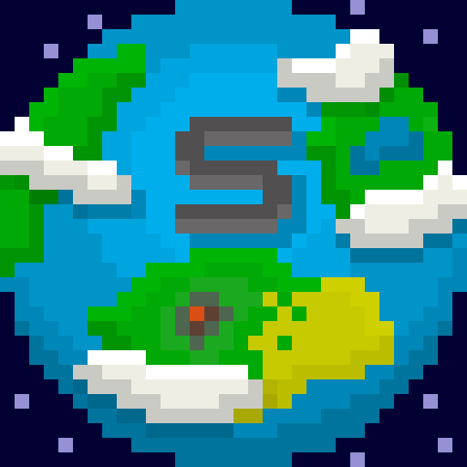
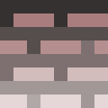
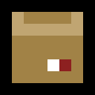
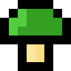
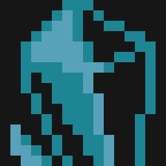

Bonjour à tous ! C'est Arthur ! Bienvenue dans cette nouvelle newsletter, mais aussi la dernière de l'année 2021. Même si aucune newsletter ne sera publiée avant le 2 janvier 2022, cela n'empêche en rien l'amélioration des fonctionnalités déjà incorporées, il n'y aura juste aucune nouvelle fonctionnalité d'ajouté. Si vous êtes nouveau, n'hésitez pas à lire les précédentes newsletters écrites par notre équipe pour découvrir ce que nous avons déjà produit.
Cette semaine, nous avons réalisé diverses choses, telles que de la correction de bug et d'ajout ou encore de l'amélioration de certains graphismes. Nous avons aussi beaucoup avancé sur notre rapport de projet. Pour rappel, nous devons le rendre avant le 17 décembre à 23 h 59.
Nous avons corrigé un bug trouvé par Balthazar qui permettait de superposer plusieurs menus Pause. Pour cela, nous avons dû vérifier que le menu Pause et que le menu des Options ne soient pas activé avant d'ouvrir un nouveau menu.
Suite aux nombreux retours sur notre logo, nous avons décidé de le refaire. Voici ci-dessous le résultat :
N'hésitez pas à nous donner vos impressions sur ce nouveau logo à travers le serveur Discord.
Vous trouverez ci-dessous différents débuts de graphismes pour le sol, les cartons, les jump pad ainsi que pour les cristaux. Tout d'abord sur la tile du sol, on peut voir un dégradé du haut vers le bas, du plus foncé au plus clair. Ensuite, sur la tile du carton, on peut voir un petit détail en rouge qui permet d'avoir un carton un peu plus sympa. Puis, sur le champignon jump-pad, l'idée a été de lui créer une animation. Enfin, nous commençons à voir quels types de graphismes nous pourrions mettre pour l'environnement d'un potentiel monde de cristal.
   Pour rappel, ces dessins sont encore au stade d'esquisse et pourront encore être améliorés par la suite.
N'hésitez pas à suivre et à partager notre Projet. Vous pouvez venir nous soutenir et poser vos questions sur notre serveur Discord.
Merci d'avoir lu cette septième newsletter et à la prochaine dans une nouvelle année !
Team Spelunca.
Rédaction : Arthur PELLEGRINI